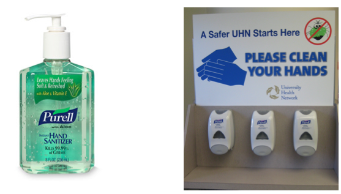

Ethanol Medical Uses
- Ethanol is used as a solvent to dissolve the active ingredient in some medicines or as an extraction solvent in herbal medicinal products. Ethanol has also been used as an antimicrobial preservative, possessing bactericidal and fungicidal activity.
- A few of the products that contain ethanol include certain formulations of Benadryl, Cheracol Plus, Dimetane, Donnatal, Geritol, Novahistine, Robitussin, Sominex, Triaminic, Tylenol and Vicks.
- Ethanol is a component of many herbal fluid preparations, since it is an excellent solvent for the extraction of herbal drugs and contributes to the stability of these medicines.
- Ethanol is anti-septic.
